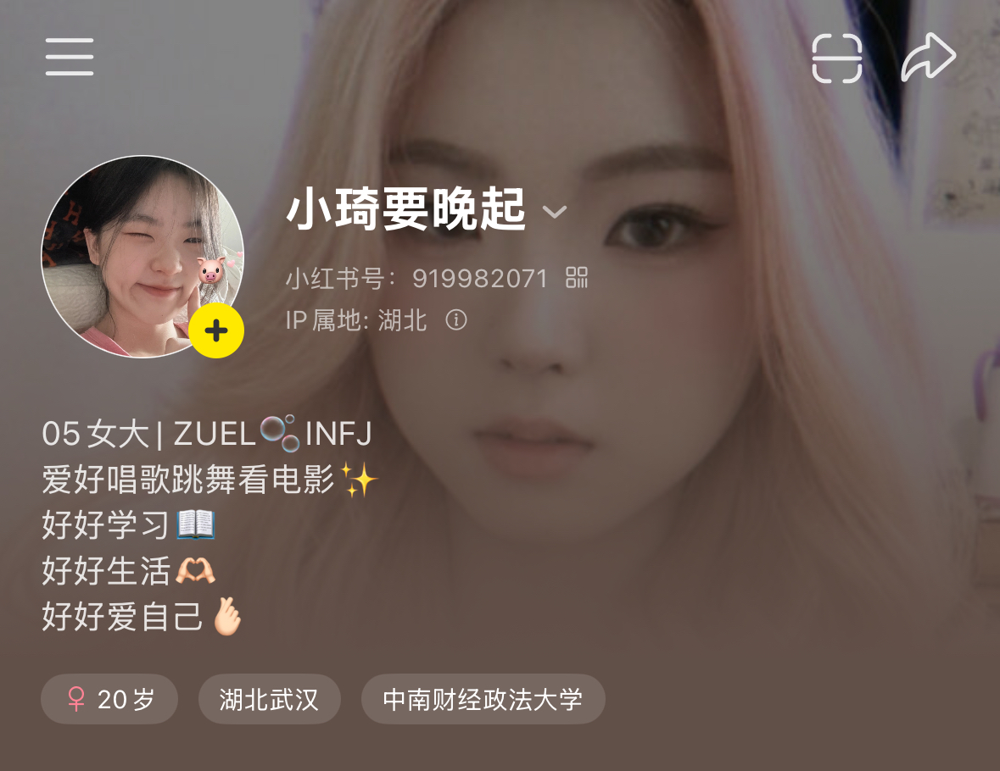
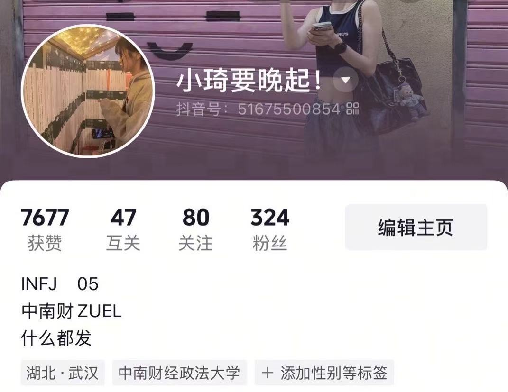
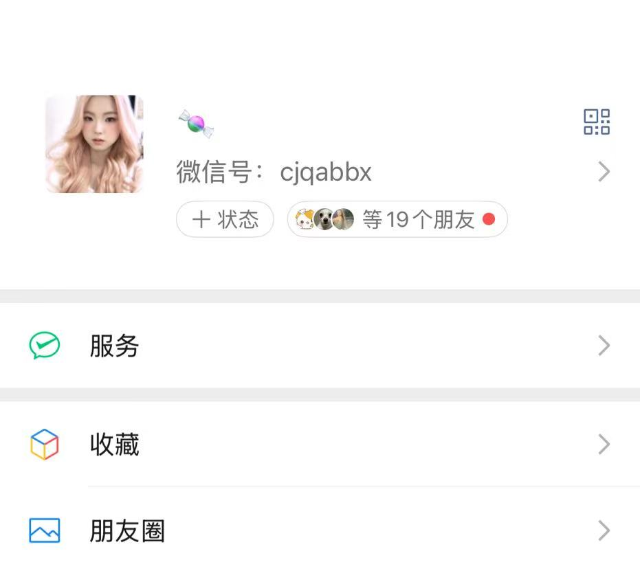
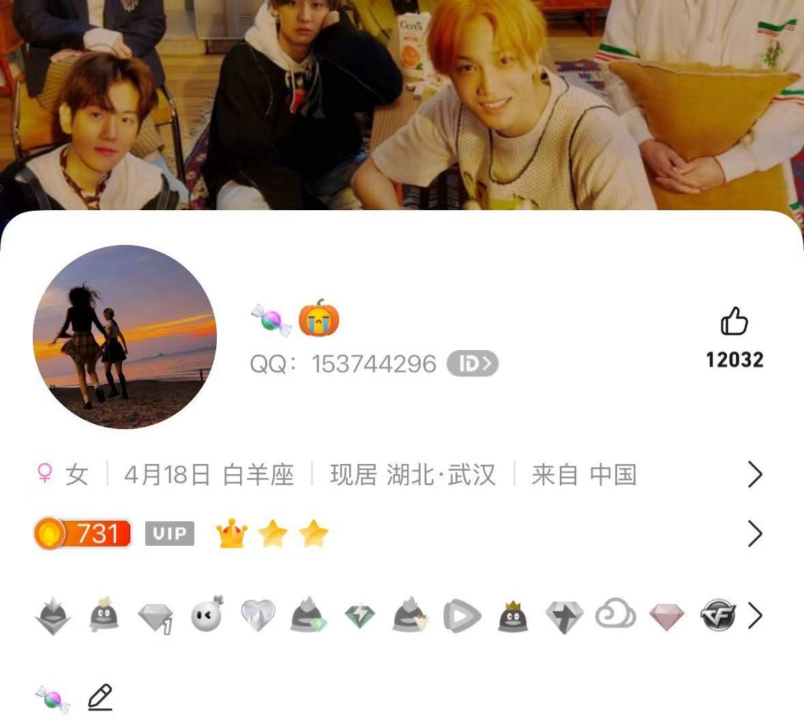

小红书
ID: cecilia_redbook
主要用途: 分享前端学习心得、生活日常和一些日常所思所想。

抖音
ID: cecilia_douyin
主要用途: 发布一些舞台的视频，记录日常和跳舞的时刻。

微信
ID: cecilia_wechat
主要用途: 与朋友、家人保持联系，偶尔会分享一些生活感悟。

ID: 153744296
主要用途: 用于日常学校的学习工作交流、班级群消息接收等。
